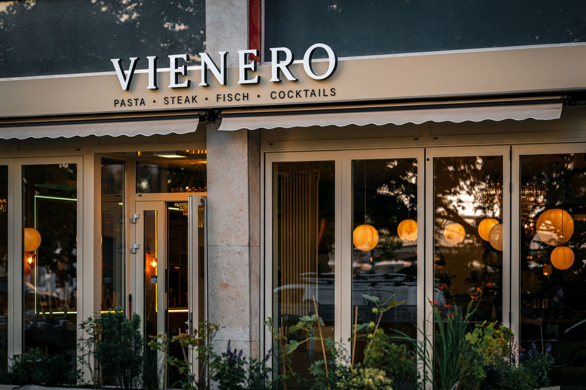

Ristorante a Vienna, a due passi da Santo Stefano
Cercate un ristorante nel centro di Vienna dove si mangia davvero bene? VIENERO è a dieci minuti a piedi dal Duomo di Santo Stefano, proprio di fronte allo Stadtpark sul Ring. Qui la cucina viennese incontra il Mediterraneo: la vera Wiener Schnitzel con impanatura soffice, pasta al tartufo nero, branzino intero alla griglia e cocktail fino a mezzanotte.



Perché VIENERO
- La Wiener Schnitzel come si deve: vitello, impanatura soffice e dorata, patate al prezzemolo. Il piatto che tutti vogliono provare a Vienna, senza la fila.
- Sapori di casa: vitello tonnato, burrata, pasta al tartufo e pasta zucchine e pistacchio, per chi dopo qualche giorno ha voglia di Mediterraneo.
- Posizione perfetta: Duomo di Santo Stefano a dieci minuti, Stadtpark davanti alla porta, fermata U3 Stubentor.
- Cucina fino alle 22, bar fino a mezzanotte: anche per chi cena all'italiana, un po' più tardi.
Natale, Immacolata e Capodanno a Vienna
Per il ponte dell'Immacolata e durante i mercatini di Natale Vienna è piena: conviene prenotare con qualche giorno di anticipo. Il 24 e il 25 dicembre siamo aperti con un menu di Natale di quattro portate a 99,99 euro, con trilogia di tartare e crema di castagne al tartufo nero. A Capodanno festeggiamo con menu, DJ e champagne a mezzanotte a 169 euro, aperti fino alle 2.
Prenota il tuo tavolo
★ 4,4 su Google · oltre 1.500 recensioni
Per venerdì e sabato sera consigliamo di prenotare.
Preferite telefonare? +43 1 913 70 05 · Gruppi da nove persone in su: chiamateci o scriveteci a Reservierung@vienero.at.
Domande frequenti
Dove si trova VIENERO?
Al Dr.-Karl-Lueger-Platz 3, nel primo distretto di Vienna, proprio di fronte allo Stadtpark. Dal Duomo di Santo Stefano sono circa dieci minuti a piedi lungo la Wollzeile, la fermata U3 Stubentor è davanti alla porta.
Quali sono gli orari?
Da lunedì a sabato dalle 12 a mezzanotte, la domenica dalle 17 a mezzanotte. La cucina è aperta fino alle 22, il bar fino a mezzanotte.
Quanto costa la Wiener Schnitzel?
La nostra Wiener Schnitzel di vitello con patate al prezzemolo costa 29,90 euro.
Siete aperti a Natale e a Capodanno?
Sì. Il 24 e il 25 dicembre serviamo un menu di Natale di quattro portate a 99,99 euro. A Capodanno festeggiamo con menu, DJ e champagne a mezzanotte a 169 euro, aperti fino alle 2.
Bisogna prenotare?
Per venerdì e sabato sera e per il periodo dei mercatini di Natale consigliamo di prenotare. Si può prenotare online, per email o al telefono +43 1 913 70 05.
Come arrivare
Orari
Lun a sab 12 a 24
Dom 17 a 24
Cucina fino alle 22
Indirizzo
Dr.-Karl-Lueger-Platz 3
1010 Vienna, allo Stadtpark
U3 Stubentor
Google Maps